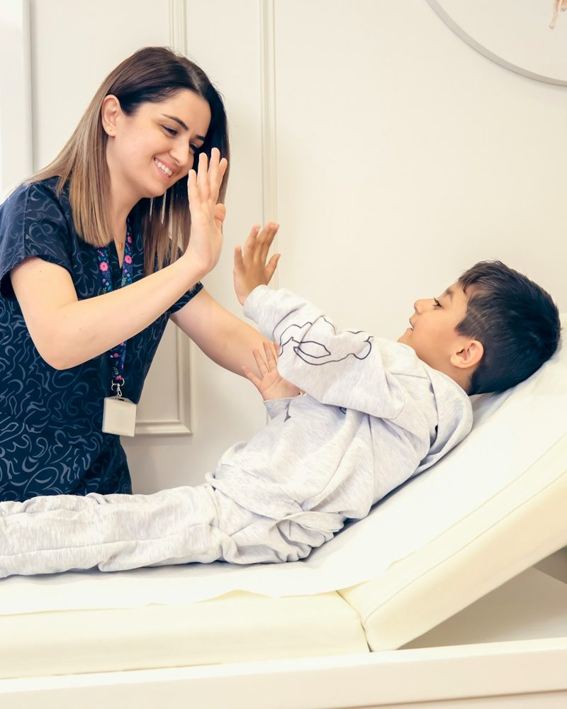
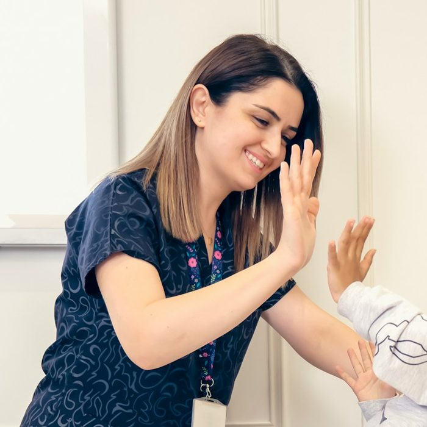

Оглядаю дітей від народження до 18 років. Призначаю лише те, що потрібно, і пояснюю, навіщо. Після прийому залишаюся на зв'язку для уточнень.

Ціни орієнтовні. Остаточну вартість називаю до початку прийому.
Ріст, вага й розвиток за віком, поради щодо харчування та режиму.
Температура, кашель, нежить, висип. Огляд і зрозумілий план лікування.
Щомісячні огляди малюка й відповіді на питання батьків у месенджері.
Перевірка календаря, графік і відповіді на питання батьків.
Для садочка, школи, басейну й таборів — після огляду.
Коли дитині краще не виходити з дому. У межах міста.
Не призначаю «про всяк випадок». Кожен аналіз і препарат має пояснення.
Після прийому ви знаєте, що робити вдома, і на що звертати увагу.
Протягом тижня відповідаю на уточнювальні питання в месенджері в робочий час.

Лікар-педіатр з 11-річним досвідом. Веду дітей від перших днів життя до підліткового віку.
На прийомі не поспішаю: даю батькам поставити всі питання й пояснюю, що відбувається з дитиною та чому обрано саме таке лікування.
Лікар-педіатр
11 років
Щорічні курси з педіатрії
Українська, англійська
Пишете у Viber чи Telegram або телефонуєте.
Підбираю вільне вікно, зазвичай протягом 1–2 днів.
Розмова з батьками й огляд дитини без поспіху.
Рекомендації письмово й зв'язок для уточнень.
Позначайте, що вже зібрали, щоб нічого не забути вдома.
Так. Для дітей з температурою є окремі години прийому, щоб не контактувати зі здоровими дітьми.
Так, протягом тижня після візиту відповідаю на уточнювальні питання в месенджері в робочий час.
Від перших днів життя до 18 років.
При загрозливих станах одразу телефонуйте 103. Приватний прийом не заміняє швидку допомогу.
Напишіть вік дитини й що турбує — запропоную найближчий вільний час.
м. Тернопіль, вул. Прикладна, 7
Пн–Пт 9:00–18:00 · Сб 9:00–13:00
Пн–Пт 16:00–18:00